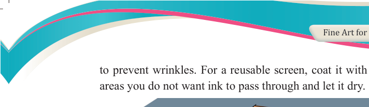
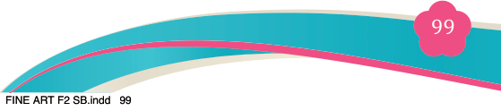
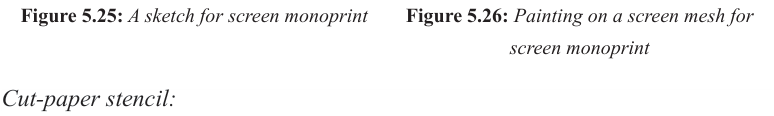
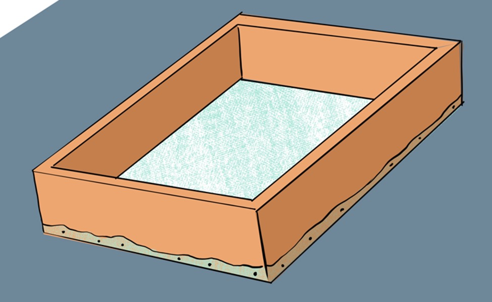
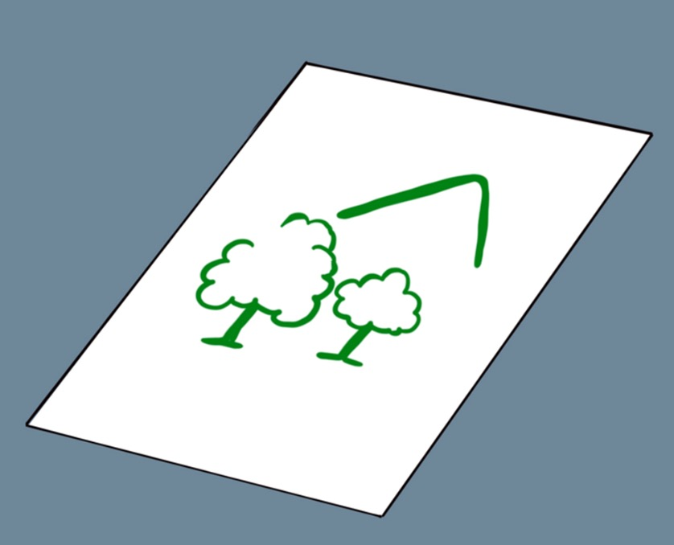
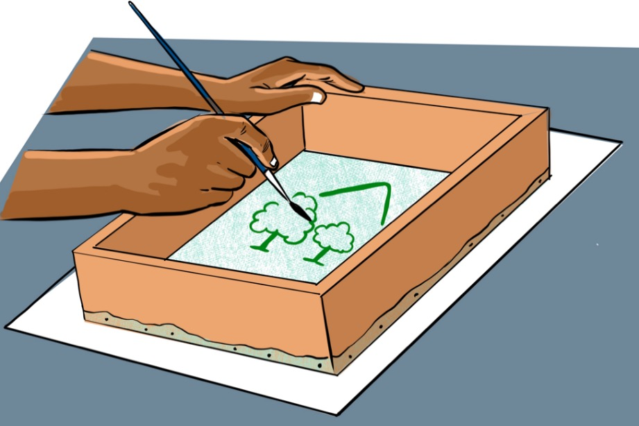

Fine Art for Secondary Schools

99


Student’s Book Form Two

to prevent wrinkles. For a reusable screen, coat it with mod podge over

areas you do not want ink to pass through and let it dry.

Figure 5.24: A screen mesh
Step 2: Create the design
There are several options used to prepare the design for screen-printing.
Here are some of them that you can use.
Freehand painting:
Use a sketchbook or plain paper to draw your design or you can paint directly onto
the screen with a brush using Mod Podge to block ink.


Figure 5.25: A sketch for screen monoprint
Figure 5.26: Painting on a screen mesh for screen monoprint
Cut-paper stencil:
Cut simple shapes in the design of your choice such as a star, heart, letters, animals,
birds, or any shape from paper and tape it to the screen.
04/08/2025 13:54